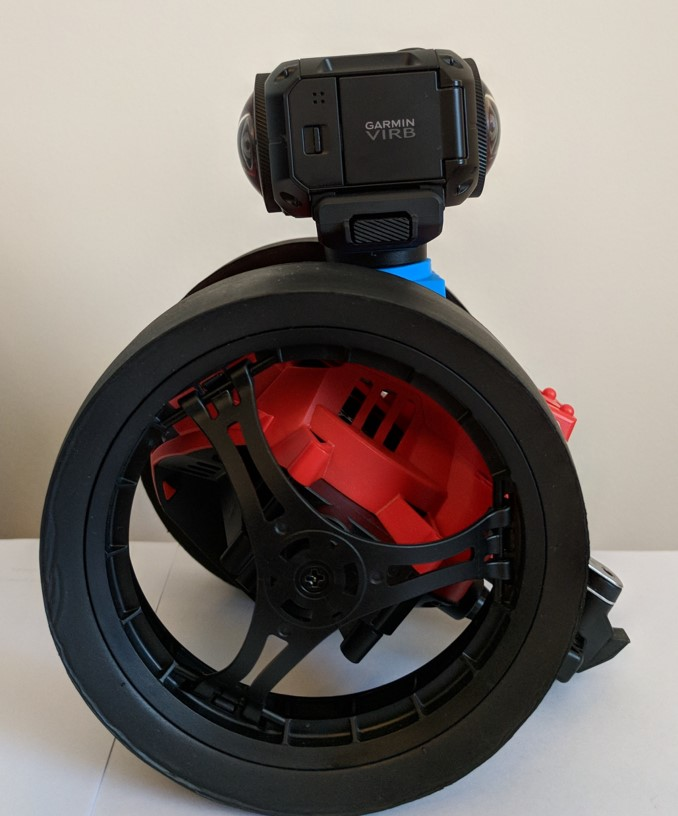
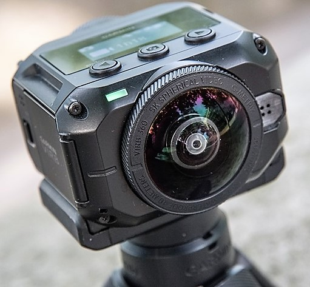
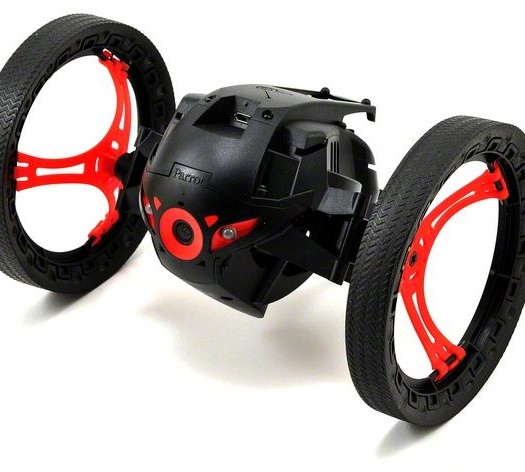
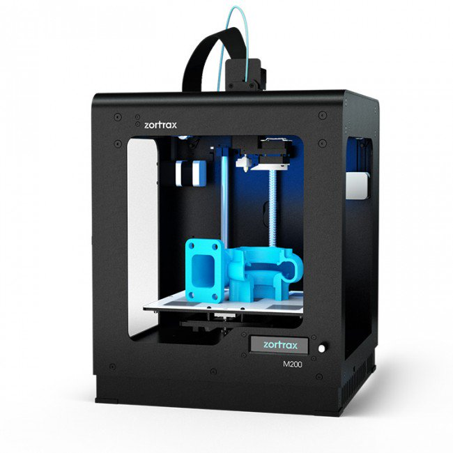

Soldier Supportive Acoustics
Author: Harrison Bennett
Acknowledgements: Matthew Shackleton, David Sly, Chris McCarthy, Stuart Favilla, Tuan Dung Lai.

The Project
Develop a mobile robot capable of
listening to the 3D audio field through ambisonic techniques.
Jan, 2018
- Provide human operators with a sense of the 3D spatial sound environment.
- Equip a 3D microphone onto a mobile robot.
- Test the human-robot interoperability in a series of complex environments.
Demo
Small 3D video with spatial audio conducted in John Street, Swinburne University of Technology using 3D camera with ambisonic sound capability mounted in robot.
Robot Audition
1. Human-Robot Interaction
- Speech recognition.
- Achieving hearing capability equivalent to humans; enabling bidirectional human robot interactions.
- Without robot audition, HRI is mostly one-directional.
2. Artificial Intelligence
‘Squirt: The Prototypical Mobile Robot for Autonomous Graduate Students’ developed by the AI Lab at MIT (now CSAIL at MIT) in 1989.Micro robot designed to hide in a dark place and locate a sound sources.

Methodology
Develop a mobile robot capable of listening to the 3D audio field through ambisonic techniques
- Mechanical Design: Mount. 
- Ground Station Design: Headphones
- Environment Testing: Select an open space environment for recording. Place speakers at a distance sufficient for a microphone to distinguish between sounds.

Background
Mobile robots typically use microphone arrays for recording its surrounding environment for real-time human operator listening.
These complex arrangements led to Robot Audition; the ability of a robot to listen to multiple sound sources at once(Nakadai et al., 2000, Okuno and Nakadai, 2015).
Minimum power consumption and real-time performance are vital system requirements in robotics, therefore microphone arrays are avoided due to their costly processing time(Keyrouz, 2011).
Tetrahedral microphones have been used for detection and tracking of UAVs by the Army Research Laboratory, Maryland USA. (Benyamin and Goldman, 2014).
Current systems do not integrate microphones capable of planar audio capture. Such microphones are known as ambisonic microphones.
Equipment
-

Garmin VIRB 360
Portable 3D camera capable of ambisonic recording -

Parrot Jumping Sumo Robot
Smartphone-controlled drone with flexible and stable movement -

Zortax 3D printer
Cutting edge and reliable LPD, 3D printers in its segment

Tags
Ambisonic Spatial Audio Parrot Jumping Sumo Audio Processing 3D camera Soldier Acoustic Robots
References
- NAKADAI, K., MATSUI, T., OKUNO, H. G. & KITANO, H. Active audition system and humanoid exterior design. IEEE International Conference on Intelligent Robots and Systems, 2000. 1453-1461.
- OKUNO, H. G. & NAKADAI, K. Robot audition: Its rise and perspectives. 2015 IEEE International Conference on Acoustics, Speech and Signal Processing (ICASSP), 19-24 April 2015 2015. 5610-5614.
- KEYROUZ, F. Humanoid hearing: A novel three-dimensional approach. 2011 IEEE International Symposium on Robotic and Sensors Environments (ROSE), 17-18 Sept. 2011 2011. 214-219.
- BENYAMIN, M. & GOLDMAN, G. H. 2014. Acoustic Detection and Tracking of a Class I UAS with a Small Tetrahedral Microphone Array. ARMY RESEARCH LAB ADELPHI MD.